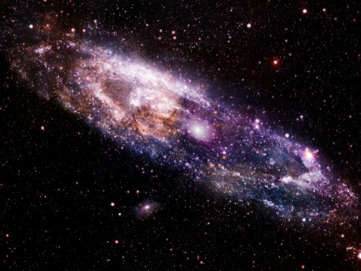

ما هو مفهوم الكون ؟
هو الفضاء الممتد الذي يحتوي علي المجرات والنجوم والكواكب والأقمار والكائنات الحيةوكل الخليقة فالكون يفوق التصور فالشمس والأرض معا ما هي إلا جزء متناهي الصغر منة فوحدة بناء الكون هو المجرة حيث يحتوي الكون علي حوالي 100 ألف مليون مجرة تتجمع معا مكونة عناقيد المجرات
فالمجرات :- هي مجموعات النجوم التي تدور معا في الفضاء الكوني بتأثير الجاذبية وتتخذ كل مجرة شكلا مميزا لإختلاف تناسق وترتيب مجكوعات النجوم بكل منها
لماذا سميت مجرة درب التبانة بهذا الإسم؟

الفيديوهات الخاصة بالموقع
عمل الطالبه: فاطمة هيثم فرج محمد
تحت اشراف : د/ همت
مقرر: المقررات الإلكترونية
القسم : تكنولوجيا التعليم
إسم البريد الإلكتروني لصاحب الموقع